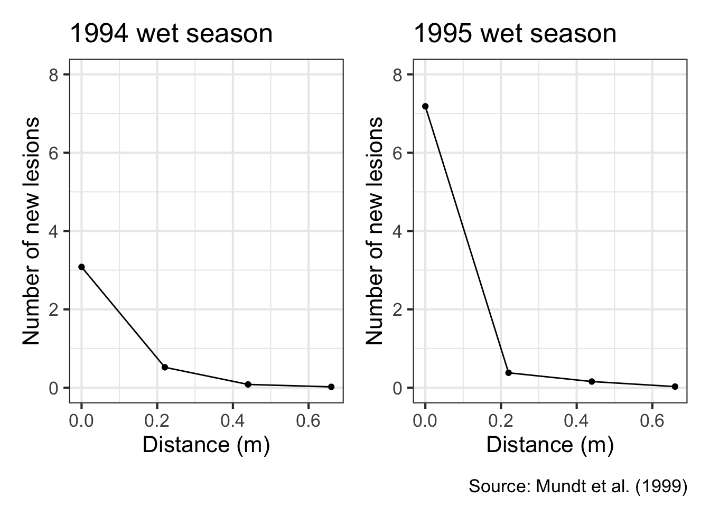
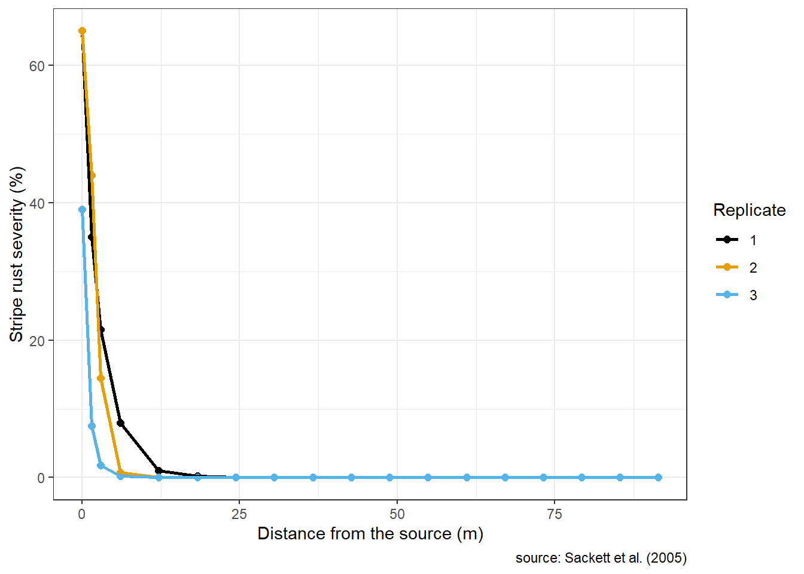
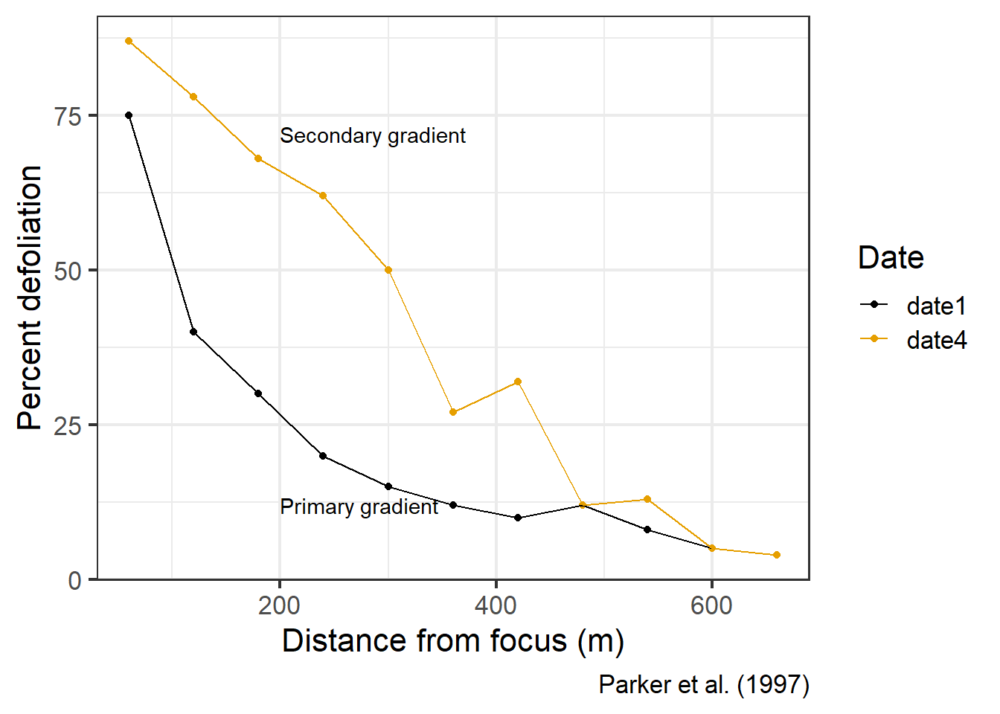
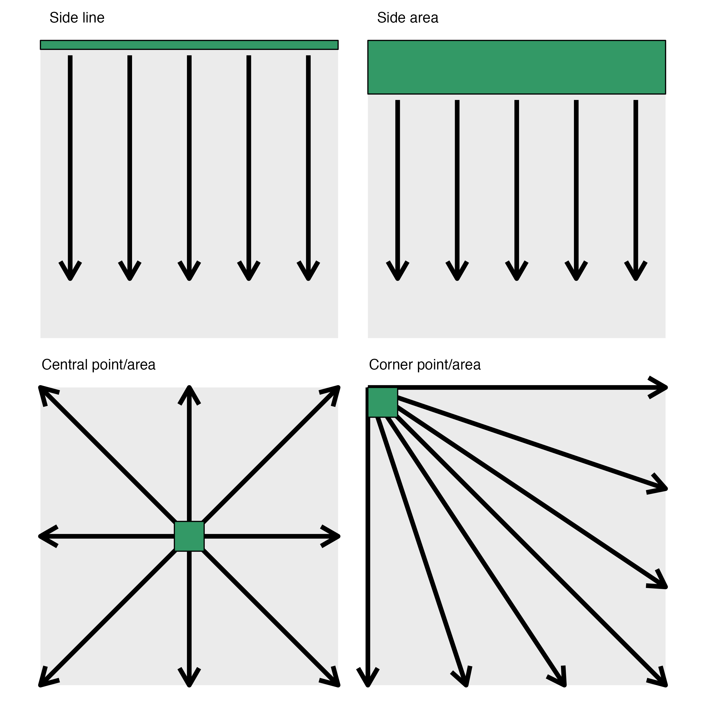

The assessment of disease in terms of its spatial distribution, particularly considering changes in its intensity as it spreads over distance, is defined as the “disease gradient.” It’s the dispersal, or migration, of the pathogen through various means—such as wind, vectors, rain, movement of infected material, or even human mediation—that encourages the spread of plant diseases within a field or across continents, thereby creating these disease gradients.
There exist two distinct types of gradients: the inoculum gradient, in which the availability of a host is not necessarily a prerequisite, and the disease gradient, where all three elements of the disease triangle are essential.
In the ensuing chapters, we shall explore examples of actual disease gradients measured in the field, each exhibiting its own unique pattern.
Our first example, from Mundt’s 1999 study (Mundt et al. 1999), sought to measure the dispersal potential of the pathogenic bacteria, Xanthomonas oryzae pv. oryzae, which is responsible for leaf blight in rice. This study was conducted using experimental plots in the Philippines during the wet seasons of 1994 and 1995.
The data were made available in this tutorial. We enter the data manually and then produce two plots, one for each year.
library(tidyverse)library(r4pde)theme_set(theme_r4pde())xo <-tibble::tribble(~d, ~y4, ~y5,0, 3.083, 7.185,0.22, 0.521, 0.38,0.44, 0.083, 0.157,0.66, 0.021, 0.028 )g1 <- xo |>ggplot(aes(d, y4))+theme_r4pde()+geom_point(size =2)+geom_line()+ylim(0,8)+labs(y ="Number of new lesions",x ="Distance (m)",title ="1994 wet season")g2 <- xo |>ggplot(aes(d, y5))+theme_r4pde()+geom_point(size =2)+geom_line()+ylim(0,8)+labs(y ="Number of new lesions",x ="Distance (m)",title ="1995 wet season")library(patchwork)(g1 | g2) +plot_annotation(caption ="Source: Mundt et al. (1999)")

Figure 12.1: Primary gradients of bacerial blight of rice in two wet seasons in the Philippines
The second example of a disease gradient pertains to stripe rust, caused by Puccinia striiformis f. sp. tritici, on wheat. This data was collected during a field experiment conducted at Hermiston in 2002, as reported in Sackett’s 2005 study (Sackett and Mundt 2005). Later, the data was made publicly available in 2015, courtesy of Mikaberidze (Mikaberidze et al. 2015). For our discussion, we’ll manually input the data in a tibble format.
This tibble contains five columns. The first and second columns represent distances from the source of infection, denoted in feet and meters, respectively. The remaining three columns consist of measures of stripe rust severity, each from a separate replicated plot. These measurements offer us a quantifiable view of the disease gradient of stripe rust in the field, thereby shedding light on the infection’s spatial distribution and intensity.
library(tidyverse)library(ggthemes)hermiston |>pivot_longer(3:5, names_to ="replicate", values_to ="severity") |>ggplot(aes(dist_m, severity, color = replicate))+theme_r4pde()+theme(legend.position ="bottom")+geom_point(size =2)+geom_line(size =1)+scale_color_grey()+labs(x ="Distance from the source (m)",y ="Stripe rust severity (%)",color ="Replicate",caption ="source: Sackett et al. (2005)")

Figure 12.2: Primary gradients of stripe rust of wheat on a replicated experiment
As evidenced by the examples presented above, disease gradients, assuming a single source of inoculum, typically display a pattern wherein the disease’s intensity diminishes more steeply within shorter proximities to the source. Conversely, the decrease is less steep at greater distances, eventually reaching a point of either zero or a low background level with only occasional diseased plants.
The unique shapes of these gradients are largely influenced by mechanisms associated with the dispersal of the inoculum, which are contingent not only on the pathogen’s biological characteristics but also heavily upon environmental factors that can impact the pathogen’s dispersion.
From this, we can categorize the resulting gradients into two types: primary and secondary. The primary gradient is generated solely from the initial source of the infection. On the other hand, the secondary gradient arises from the movement of inoculum that has been produced by plants previously infected due to the primary gradient. These secondary infections then spread to other plants situated at increasing distances from the initial source.
As the disease proliferates over time, it’s expected that a combination of both primary and secondary gradients will manifest. This interplay between the two gradient types contributes to the overall spread and severity of the disease within a given population and environment.
As an example of primary and secondary gradients, let’s visualize the gradients of Septoria leaf spot, caused by Septoria lycopersici, on tomato (Parker et al. 1997). The gradients were measured during two times, thus enabling a comparison of primary and secondary dispersal/disease gradients. More details of the study and experimental approach were provided in this tutorial. The data is entered below as a tribble and the plot produced using ggplot2.
septoria <-tibble::tribble(~d, ~date1, ~date4,60, 75, 87,120, 40, 78,180, 30, 68,240, 20, 62,300, 15, 50,360, 12, 27,420, 10, 32,480, 12, 12,540, 8, 13,600, 5, 5,660, 4, 4 )septoria |>pivot_longer(2:3, names_to ="date", values_to ="defoliation") |>ggplot(aes(d, defoliation, color = date))+theme_r4pde()+geom_point()+geom_line()+scale_color_grey()+annotate(geom ="text", x =200, y =12, label ="Primary gradient", hjust ="left")+annotate(geom ="text", x =200, y =72, label ="Secondary gradient", hjust ="left")+labs(x ="Distance from focus (m)",y ="Percent defoliation",color ="Date",caption ="Parker et al. (1997)")

Figure 12.3: Primary and secondary gradients of defoliation due to Septoria leaf spot on tomato
When studying disease gradients, researchers need to make sure that there is a well-defined single source of inoculum. In gradients, this is called a focus (where foci are deemed the plural), from where the inoculum originates. Three types of foci can be defined: point, line or area sources. While the point source can be a plant or group of plants at any position in the plot or field (center or corner), line and area sources are usually defined as one or more rows of diseased plants at one side of the plot or field.
Code
library(ggplot2)line <-ggplot(data.frame(c(1:10),c(1:10)))+annotate("rect", xmin =0, xmax =10, ymin =0, ymax =10, fill ="gray92")+annotate("rect", xmin =0, xmax =10, ymin =9.7, ymax =10, color ="black", fill ="#339966")+annotate("segment", size =2, x =1, xend =1, y =9.5, yend =2, arrow =arrow())+annotate("segment", size =2, x =3, xend =3, y =9.5, yend =2, arrow =arrow())+annotate("segment", size =2, x =5, xend =5, y =9.5, yend =2, arrow =arrow())+annotate("segment", size =2, x =7, xend =7, y =9.5, yend =2, arrow =arrow())+annotate("segment", size =2, x =9, xend =9, y =9.5, yend =2, arrow =arrow())+ylim(0,10)+xlim(0,10)+coord_fixed()+theme_void()+labs(title =" Side line")area <-ggplot(data.frame(c(1:10),c(1:10)))+annotate("rect", xmin =0, xmax =10, ymin =0, ymax =10, fill ="gray92")+annotate("rect", xmin =0, xmax =10, ymin =8.2, ymax =10, color ="black", fill ="#339966")+annotate("segment", size =2, x =1, xend =1, y =8, yend =2, arrow =arrow())+annotate("segment", size =2, x =3, xend =3, y =8, yend =2, arrow =arrow())+annotate("segment", size =2, x =5, xend =5, y =8, yend =2, arrow =arrow())+annotate("segment", size =2, x =7, xend =7, y =8, yend =2, arrow =arrow())+annotate("segment", size =2, x =9, xend =9, y =8, yend =2, arrow =arrow())+ylim(0,10)+xlim(0,10)+coord_fixed()+theme_void()+labs(title =" Side area")point_central <-ggplot(data.frame(c(1:10),c(1:10)))+annotate("rect", xmin =0, xmax =10, ymin =0, ymax =10, fill ="gray92")+annotate("segment", size =2, x =5, xend =10, y =5, yend =10, arrow =arrow())+annotate("segment", size =2, x =5, xend =10, y =5, yend =5, arrow =arrow())+annotate("segment", size =2, x =5, xend =10, y =5, yend =0, arrow =arrow())+annotate("segment", size =2, x =5, xend =0, y =5, yend =0, arrow =arrow())+annotate("segment", size =2, x =5, xend =0, y =5, yend =5, arrow =arrow())+annotate("segment", size =2, x =5, xend =0, y =5, yend =10, arrow =arrow())+annotate("segment", size =2, x =5, xend =5, y =5, yend =10, arrow =arrow())+annotate("segment", size =2, x =5, xend =5, y =5, yend =0, arrow =arrow())+annotate("rect", xmin =5.5, xmax =4.5, ymin =4.5, ymax =5.5, color ="black", fill ="#339966" )+ylim(0,10)+xlim(0,10)+coord_fixed()+theme_void()+labs(title =" Central point/area")point_corner <-ggplot(data.frame(c(1:10),c(1:10)))+annotate("rect", xmin =0, xmax =10, ymin =0, ymax =10, fill ="gray92")+annotate("segment", size =2, x =0, xend =10, y =10, yend =0, arrow =arrow())+annotate("segment", size =2, x =0, xend =6.6, y =10, yend =0, arrow =arrow())+annotate("segment", size =2, x =0, xend =3.3, y =10, yend =0, arrow =arrow())+annotate("segment", size =2, x =0, xend =0, y =10, yend =0, arrow =arrow())+annotate("segment", size =2, x =0, xend =10, y =10, yend =3.3, arrow =arrow())+annotate("segment", size =2, x =0, xend =10, y =10, yend =6.6, arrow =arrow())+annotate("segment", size =2, x =0, xend =10, y =10, yend =10, arrow =arrow())+annotate("rect", xmin =0, xmax =1, ymin =9, ymax =10, color ="black", fill ="#339966")+ylim(0,10)+xlim(0,10)+coord_fixed()+theme_void()+labs(title =" Corner point/area")library(patchwork)p_gradients <- (line | area)/(point_central | point_corner)ggsave("imgs/gradients.png", width =9, height =9, bg ="white")

Figure 12.4: Example of location and size of inoculum sources for the study of disease gradients
Mikaberidze, A., Mundt, C. C., and Bonhoeffer, S. 2015. Data from: Invasiveness of plant pathogens depends on the spatial scale of host distribution. https://doi.org/10.5061/DRYAD.F2J8S.
Mundt, C. C., Ahmed, H. U., Finckh, M. R., Nieva, L. P., and Alfonso, R. F. 1999. Primary Disease Gradients of Bacterial Blight of Rice. Phytopathology® 89:64–67. https://doi.org/10.1094/phyto.1999.89.1.64.
Parker, S. K., Nutter, F. W., and Gleason, M. L. 1997. Directional Spread of Septoria Leaf Spot in Tomato Rows. Plant Disease 81:272–276. https://doi.org/10.1094/pdis.1997.81.3.272.
Sackett, K. E., and Mundt, C. C. 2005. Primary Disease Gradients of Wheat Stripe Rust in Large Field Plots. Phytopathology® 95:983–991. https://doi.org/10.1094/phyto-95-0983.